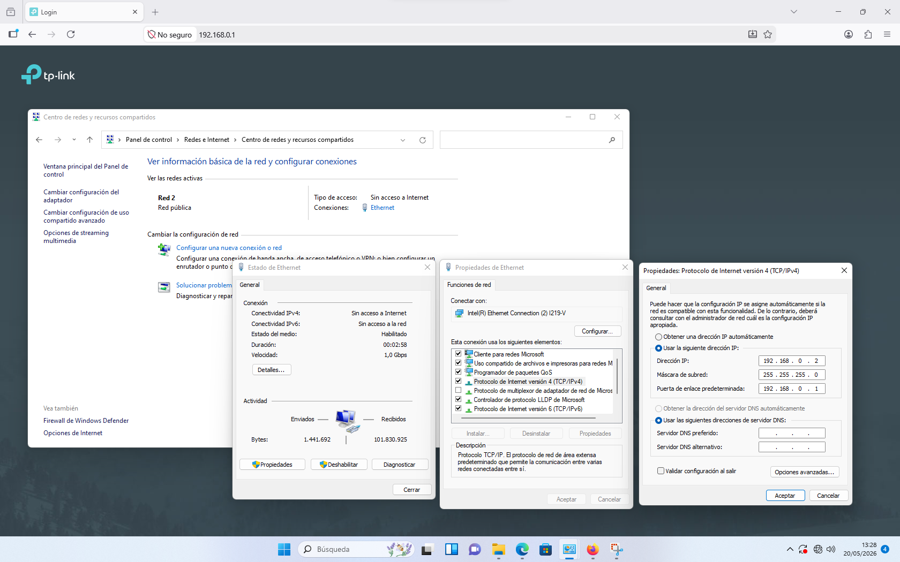
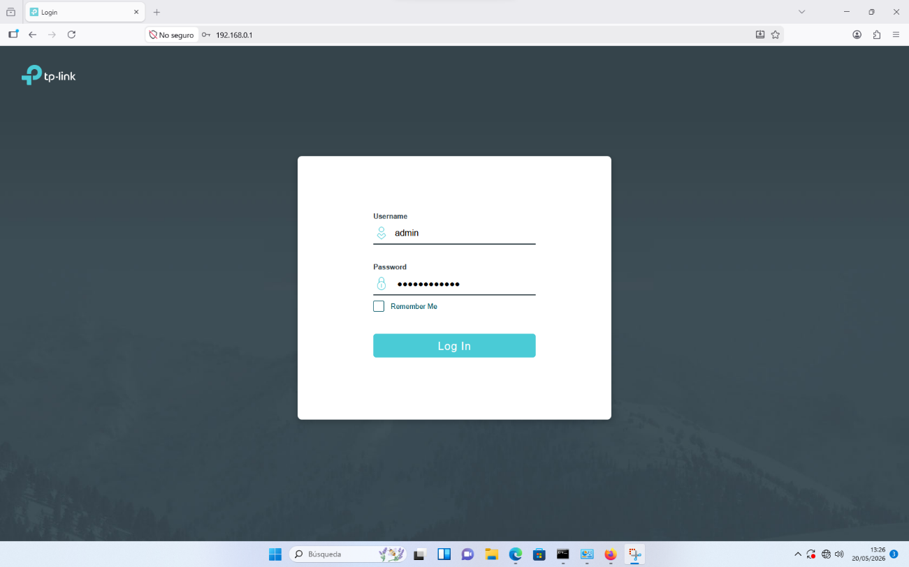
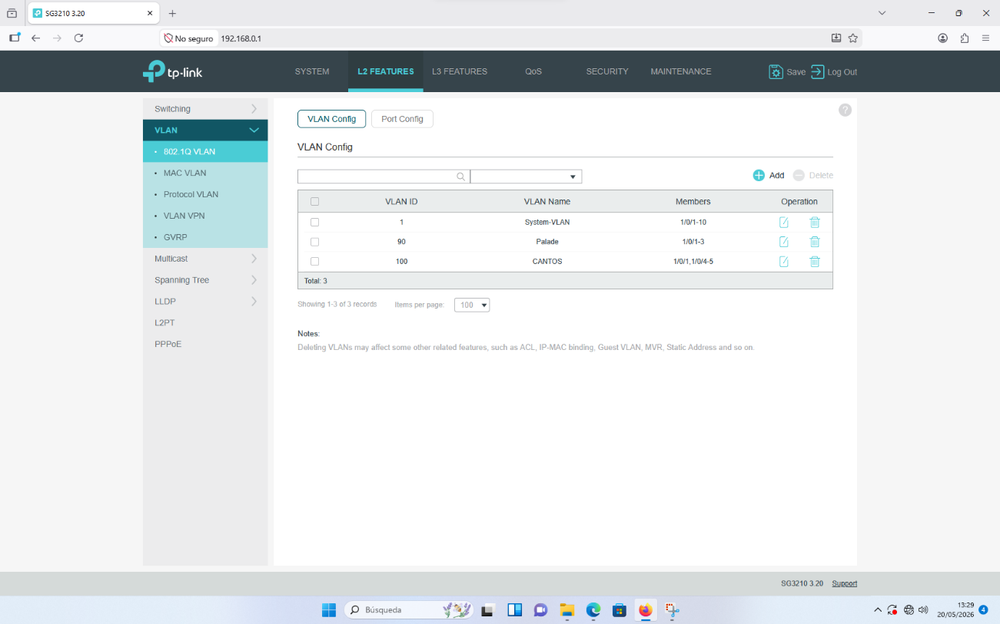
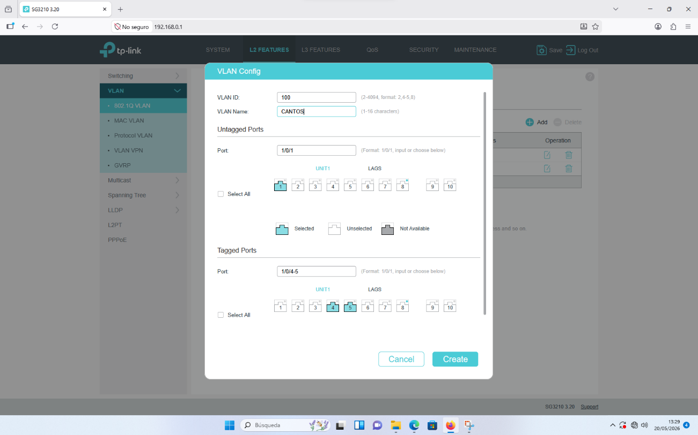

Actividad 4: Configuración de Switch
Practicas Act 4 - Documentación
1. Introducción
En esta actividad configuramos un switch gestionable TP-Link (modelo SG3210) accediendo a su panel de administración web. El proceso incluye la configuración IP del equipo para acceder al switch, el acceso al panel de control y la creación de VLANs.
2. Materiales utilizados
- Switch TP-Link SG3210
- Cable de red
- Ordenador con navegador web
3. Configuración de la IP del equipo
Para acceder al panel del switch es necesario que el equipo esté en la misma red que el dispositivo. El switch tiene por defecto la IP 192.168.0.1, por lo que configuramos el adaptador Ethernet del PC con los siguientes parámetros:
| Parámetro | Valor |
|---|---|
| Dirección IP | 192.168.0.2 |
| Máscara de subred | 255.255.255.0 |
| Puerta de enlace | 192.168.0.1 |
Accedemos a esta configuración desde Panel de control → Redes e Internet → Centro de redes y recursos compartidos → Propiedades del adaptador Ethernet → Protocolo de Internet versión 4 (TCP/IPv4).

Captura 1 - Configuración de la IP del adaptador Ethernet del PC
4. Acceso al panel de administración
Con la IP configurada, abrimos el navegador y accedemos a 192.168.0.1. Nos aparece la pantalla de login del switch TP-Link. Introducimos las credenciales por defecto:
- Username: admin
- Password: admin

Captura 2 - Pantalla de login del switch TP-Link (192.168.0.1)
5. Configuración de VLANs
Una vez dentro del panel, accedemos a L2 Features → VLAN → 802.1Q VLAN → VLAN Config. Aquí se pueden ver y gestionar todas las VLANs del switch. En nuestro caso teníamos configuradas las siguientes:
| VLAN ID | Nombre | Puertos miembro |
|---|---|---|
| 1 | System-VLAN | 1/0/1-10 |
| 90 | Palade | 1/0/1-3 |
| 100 | CANTOS | 1/0/1, 1/0/4-5 |

Captura 3 - Vista general de las VLANs configuradas en el switch
6. Creación de una nueva VLAN
Para crear una nueva VLAN pulsamos el botón Add dentro de VLAN Config. Rellenamos los campos con los datos de la VLAN que queremos crear. En este caso creamos la VLAN 100 con el nombre CANTOS, asignando puertos sin etiquetar (Untagged) y con etiqueta (Tagged):
- VLAN ID: 100
- VLAN Name: CANTOS
- Untagged Ports: 1/0/1
- Tagged Ports: 1/0/4-5
Una vez configurado pulsamos Create para guardar la VLAN.

Captura 4 - Formulario de creación de la VLAN 100 (CANTOS)
7. Resultado
Tras seguir los pasos, conseguimos acceder correctamente al panel de administración del switch y configurar las VLANs necesarias. La configuración quedó guardada en el dispositivo.